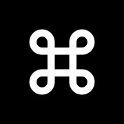
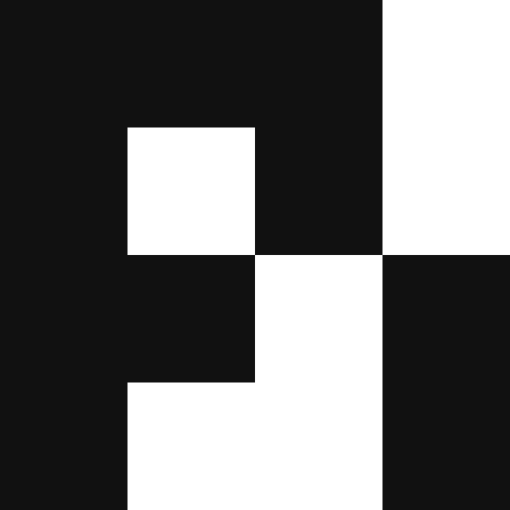
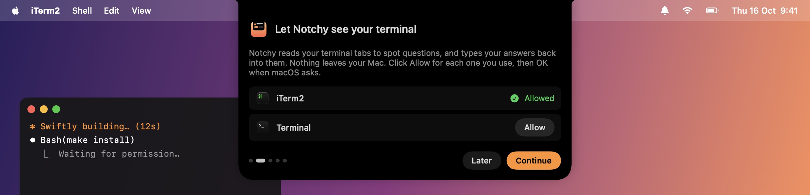

Works where you work.
Terminals
iTerm2

tmux

WezTerm
Ghostty, Warp, Alacritty and the VS Code terminal work too, when you run tmux inside them.
Tools




y/N
Any CLI that asksWhen Claude needs a yes or finishes, it shows up in your MacBook notch. Reply from there.
curl -fsSL https://raw.githubusercontent.com/Adityaadpandey/notchy/main/install.sh | bash
Paste it in Terminal and you are connected. Or brew install --cask adityaadpandey/tap/notchy
Paste one line. Notchy opens and walks you through the rest.
In Terminal. Notchy installs itself and opens.
Click Allow on the welcome card, then OK when macOS asks.
From now on, Claude comes to your notch when it needs you.

You stay in the app you are in. Notchy does the checking.
Claude asks to run a command? You see exactly what, and click Yes, Yes and don't ask again, or No. Your work never stops.
A card opens the moment Claude finishes. And a nudge if a question waits too long.
5-hour and weekly limits for Claude, Codex and Command Code, and when they reset.
Hover the notch. Waiting or working, at a glance.
notchyDo you want to proceed?
apiRefactoring… 1m 12s
Answer with one key. No mouse needed.
Nothing you type or read leaves it. Passwords always stay in the terminal.
Terminals
Ghostty, Warp, Alacritty and the VS Code terminal work too, when you run tmux inside them.
Tools


Yes. Notchy is free and open source under the MIT licence.
No. Anything asking for a password stays in the terminal. Everything Notchy reads stays on your Mac.
Notchy hangs from the top middle of your screen instead.
macOS 14 Sonoma or later, and iTerm2, Terminal, tmux, kitty or WezTerm.
Run the install line again to update, or use brew upgrade --cask notchy. To remove it, run brew uninstall --cask notchy.
One line in Terminal. You are connected.
curl -fsSL https://raw.githubusercontent.com/Adityaadpandey/notchy/main/install.sh | bash
Or with Homebrew: brew install --cask adityaadpandey/tap/notchy